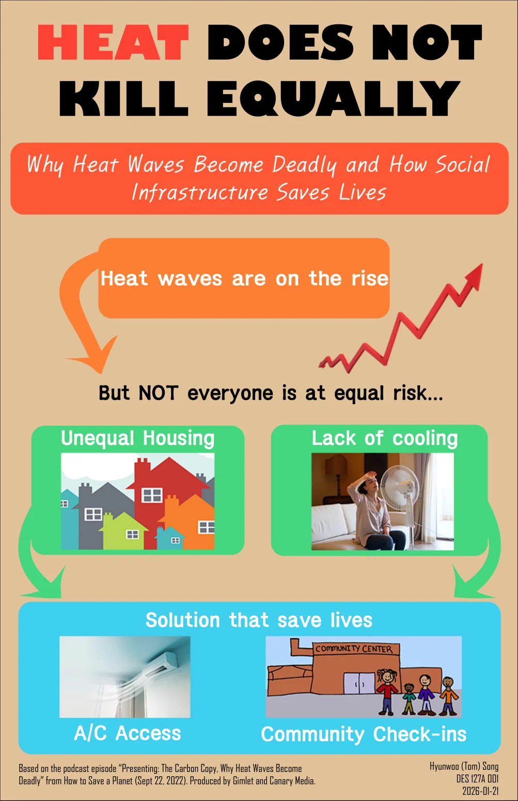

DES 127A · INFORMATION DESIGN · COURSEWORK
Heat Does Not Kill Equally
A climate communication poster explaining unequal heat-wave vulnerability and the role of social infrastructure.

01 / VISUAL COMMUNICATION
Turn a complex issue into a clear message
The poster emphasizes that heat-wave risk depends in part on housing conditions and access to cooling. It uses large type, bright color blocks, simplified illustrations, and a clear sequence from risk to possible community responses.
02 / SOURCE & SCOPE
An explanatory coursework graphic
The poster is based on an episode about deadly heat waves from How to Save a Planet. It is a communication design exercise, not an original climate research study.
ORIGINAL MATERIALS